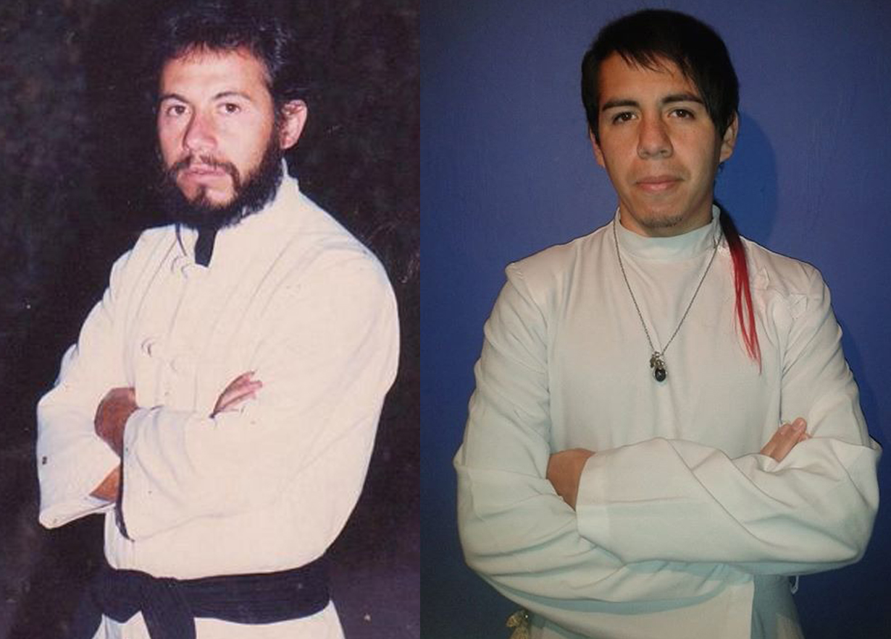

¿QUÉ ES ASIFIM?
Definición y Marco General

ASIFIM es una esfera integral de exploración, disciplina y transmisión,
orientada al desarrollo de la soberanía individual, la claridad mental
y la integración consciente de la experiencia humana en todas sus dimensiones:
corporal, psíquica, energética, creativa, simbólica y social.
ASIFIM no es una escuela tradicional, ni una empresa de desarrollo personal,
ni una terapia, ni una religión, ni un sistema de creencias cerrado.
No propone dogmas, jerarquías espirituales ni modelos universales que deban ser
adoptados por todos. Funciona como un sistema metodológico abierto que ofrece marcos de observación,
herramientas prácticas y experiencias de entrenamiento individual.
ASIFIM funciona como un sistema metodológico que articula saberes tradicionales,
prácticas disciplinarias y exploraciones contemporáneas,
ofreciendo marcos de observación, herramientas prácticas
y experiencias de entrenamiento individual.
La autodisciplina es un eje central del método ASIFIM.
No entendida como imposición externa,
sino como la capacidad consciente de sostener prácticas,
decisiones y procesos propios con responsabilidad y criterio.
Dentro de su pedagogía, ASIFIM integra procesos de aprendizaje
basados en la experiencia sensorial consciente, la exposición controlada
a estímulos físicos, emocionales y simbólicos, y el uso del gesto, el rito,
la performance y la vivencia directa como herramientas de comprensión.
Estas exploraciones —que pueden involucrar el cuerpo, la percepción, la energía,
el deseo, la voluntad y los límites personales— se desarrollan desde una ética de
consentimiento, autocuidado y responsabilidad individual, permitiendo que cada persona
observe, ordene e integre sus propios estados internos sin disociación ni dependencia externa.
ASIFIM reconoce la individualidad como un valor fundamental.
No busca homogeneizar, corregir ni normalizar a las personas,
sino acompañar procesos donde cada individuo
desarrolla su propio camino de integración,
en diálogo consciente con otros, sin dependencia ni sometimiento.
ASIFIM está orientado exclusivamente a adultos responsables.
No promete resultados garantizados, iluminación espiritual
ni soluciones universales.
Propone un marco serio, lúcido y flexible
para quienes deciden explorar y asumir su propio proceso.